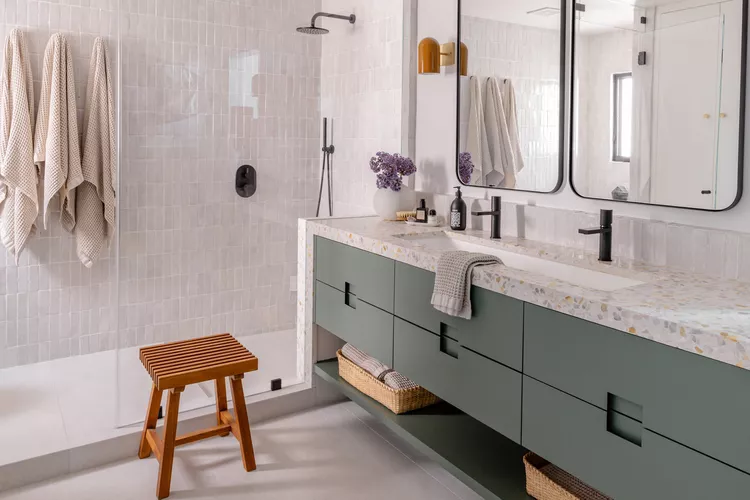
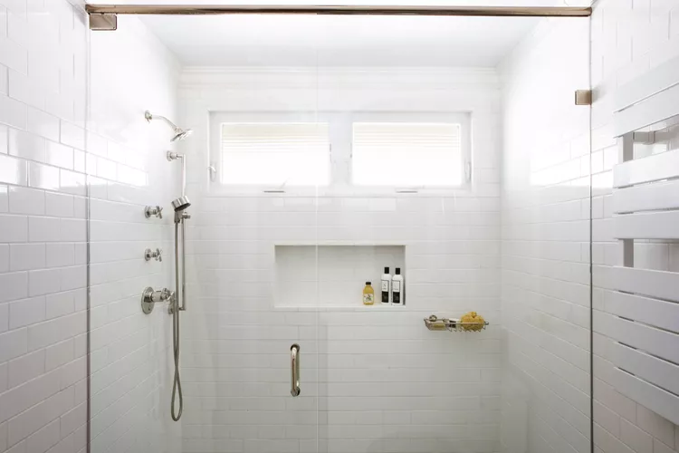

Examples of bathrooms
Full Bathroom
 Full bathrooms have a toilet, sink, shower,
and
bathtub/shower
combination or a separate bathtub or soaking tub and shower.
Most homes will have at least one full bathroom. A full bathroom is versatile and valuable, packing many
functions into a relatively small space. It is common for low- to mid-priced two-bedroom homes to have one full
bathroom.
When a house with multiple bedrooms shares one bathroom, designing that bathroom as a Jack and Jill bathroom
makes the bathroom accessible to two of those bedrooms. A Jack and Jill bathroom has two doors that lead in and
out of two bedrooms.
Full bathrooms have a toilet, sink, shower,
and
bathtub/shower
combination or a separate bathtub or soaking tub and shower.
Most homes will have at least one full bathroom. A full bathroom is versatile and valuable, packing many
functions into a relatively small space. It is common for low- to mid-priced two-bedroom homes to have one full
bathroom.
When a house with multiple bedrooms shares one bathroom, designing that bathroom as a Jack and Jill bathroom
makes the bathroom accessible to two of those bedrooms. A Jack and Jill bathroom has two doors that lead in and
out of two bedrooms.
Three-Quarter Bathroom
Half
Bathroom
Half-bathrooms have a toilet and a sink. Half-bathrooms are called powder rooms or guest bathrooms as often as
they are called half bathrooms.
Half-baths allow more privacy for the homeowner, as visitors can use the toilet and wash up without entering the
bedroom areas. Also, since full bathrooms tend to be more personal spaces with garments and medicines, visitors
never need to see those items.
Since half-bathrooms are more for brief and limited use by visitors, they typically have only a minimum amount
of storage space. An enclosed bathroom vanity cabinet is usually large enough to store the few cleaning items
and toilet paper needed for the half bathroom.
Quarter Bathroom
A quarter-bathroom is a small room that contains either a toilet or a shower stall.
Quarter bathrooms
are often called utility toilets or utility showers.
Quarter bathrooms are not common. They are sometimes found in the basements or lower levels of older homes.
These bathrooms would likely have been installed retroactively by the homeowner, not by the original builder.
Quarter-bathrooms would provide a homeowner working outside or a handyman with a convenient toilet or shower,
without having to walk through the house.
Home
Kitchen
Bedroom
Order
Back to Top